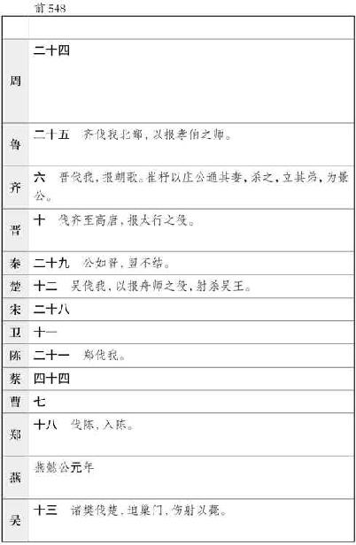
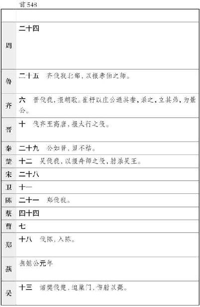
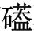

史记卷八十七
李斯列传第二十七
李斯 者，楚上蔡 人也。年少时，为郡小吏，见吏舍厕中鼠食不洁，近人犬，数惊恐之。斯 入仓，观仓中鼠，食积粟，居大庑之下，不见人犬之忧。于是李斯 乃叹曰：“人之贤不肖譬如鼠矣，在所自处耳！”
乃从荀卿 学帝王之术。学已成，度楚王 不足事，而六国皆弱，无可为建功者，欲西入秦 。辞于荀卿 曰：“斯 闻得时无怠，今万乘方争时，游者主事。今秦王 欲吞天下，称帝而治，此布衣驰骛之时而游说者之秋也。处卑贱之位而计不为者，此禽鹿视肉，人面而能强行者耳。故诟莫大于卑贱，而悲莫甚于穷困。久处卑贱之位，困苦之地，非世而恶利，自托于无为，此非士之情也。故斯 将西说秦王 矣。”
至秦
，会庄襄王
卒，李斯
乃求为秦
相文信侯吕不韦
舍人；不韦
贤之，任以为郎。李斯
因以得说，说秦王
曰：“胥人者，去其几也。成大功者，在因瑕衅而遂忍之。昔者秦穆公
之霸，终不东并六国者，何也？诸侯尚众，周
德未衰，故五伯
迭兴，更尊周室
。自秦孝公
以来，周室
卑微，诸侯相兼，关东
为六国，秦
之乘胜役诸侯，盖六世矣。今诸侯服秦
，譬若郡县。夫以秦
之强，大王之贤，由灶上骚除，足以灭诸侯，成帝业，为天下一统，此万世之一时也。今怠而不急就，诸侯复强，相聚约从，虽有黄帝
之贤，不能并也。”秦王
乃拜斯
为长史，听其计，阴遣谋士赍持金玉以游说诸侯。诸侯名士可下以财者，厚遗结之；不肯者，利剑刺之。离其君臣之计，秦王
乃使其良将随其后。秦王
拜斯
为客卿。
会韩 人郑国 来间秦 ，以作注溉渠，已而觉。秦 宗室大臣皆言秦王 曰：“诸侯人来事秦 者，大抵为其主游间于秦 耳，请一切逐客。”李斯 议亦在逐中。斯 乃上书曰：
臣闻吏议逐客，窃以为过矣。昔缪公 求士，西取由余 于戎 ，东得百里奚 于宛 ，迎蹇叔 于宋 ，来丕豹 、公孙支 于晋 。此五子者，不产于 秦 ，而缪公 用之，并国二十，遂霸西戎 。孝公 用商鞅 之法，移风易俗，民以殷盛，国以富强，百姓乐用，诸侯亲服，获楚 、魏 之师，举地千里，至今治强。惠王 用张仪 之计，拔三川 之地，西并巴 、蜀 ，北收上郡 ，南取汉中 ，包九夷，制鄢 、郢 ，东据成皋 之险，割膏腴之壤，遂散六国之从，使之西面事秦 ，功施到今。昭王 得范睢 ，废穰侯 ，逐华阳 ，强公室，杜私门，蚕食诸侯，使秦 成帝业。此四君者，皆以客之功。由此观之，客何负于秦 哉！向使四君却客而不内，疏士而不用，是使国无富利之实而秦 无强大之名也。
今陛下致昆山
之玉，有随
、和
之宝，垂明月之珠，服太阿之剑，乘纤离之马，建翠凤之旗，树灵鼍之鼓。此数宝者，秦
不生一焉，而陛下说之，何也？必秦国
之所生然后可，则是夜光之璧不饰朝廷，犀象之器不为玩好，郑
、卫
之女不充后宫，而骏良 
不实外厩，江南
金锡不为用，西蜀
丹青不为采。所以饰后宫、充下陈、娱心意、说耳目者，必出于秦
然后可，则是宛
珠之簪，傅玑之珥，阿缟之衣，锦绣之饰不进于前，而随俗雅化佳冶窈窕赵
女不立于侧也。夫击瓮叩缶弹筝搏髀，而歌呼呜呜快耳者，真秦
之声也；郑
、卫
、桑间
、昭
、虞
、武
、象
者，异国之乐也。今弃击瓮叩缶而就郑卫
，退弹筝而取昭虞
，若是者何也？快意当前，适观而已矣。今取人则不然。不问可否，不论曲直，非秦
者去，为客者逐。然则是所重者在乎色乐珠玉，而所轻者在乎人民也。此非所以跨海内制诸侯之术也。

不实外厩，江南
金锡不为用，西蜀
丹青不为采。所以饰后宫、充下陈、娱心意、说耳目者，必出于秦
然后可，则是宛
珠之簪，傅玑之珥，阿缟之衣，锦绣之饰不进于前，而随俗雅化佳冶窈窕赵
女不立于侧也。夫击瓮叩缶弹筝搏髀，而歌呼呜呜快耳者，真秦
之声也；郑
、卫
、桑间
、昭
、虞
、武
、象
者，异国之乐也。今弃击瓮叩缶而就郑卫
，退弹筝而取昭虞
，若是者何也？快意当前，适观而已矣。今取人则不然。不问可否，不论曲直，非秦
者去，为客者逐。然则是所重者在乎色乐珠玉，而所轻者在乎人民也。此非所以跨海内制诸侯之术也。
臣闻地广者粟多，国大者人众，兵强则士勇。是以太山 不让土壤，故能成其大；河海不择细流，故能就其深；王者不却众庶，故能明其德。是以地无四方，民无异国，四时充美，鬼神降福，此五帝 、三王 之所以无敌也。今乃弃黔首以资敌国，却宾客以业诸侯，使天下之士退而不敢西向，裹足不入秦 ，此所谓“藉寇兵而赍盗粮”者也。
夫物不产于秦 ，可宝者多；士不产于秦 ，而愿忠者众。今逐客以资敌国，损民以益仇，内自虚而外树怨于诸侯，求国无危，不可得也。
秦王
乃除逐客之令，复李斯
官，卒用其计谋。官至廷尉。二十馀年，竞并天下，尊主为皇帝，以斯
为丞相。夷郡县城，销其兵刃，示不复用。使秦
无尺土之封，不立子弟为王、功臣为诸侯者，使后无战攻之患。
始皇
三十四年，置酒咸阳宫
，博士仆射周青臣
等颂称始皇
威德。齐
人淳于越
进谏曰：“臣闻之，殷周
之王千馀岁，封子弟功臣自为支辅。今陛下
有海内，而子弟为匹夫，卒有田常
、六卿之患，臣无辅弼，何以相救哉？事不师古而能长久者，非所闻也。今青臣
等又面谀以重陛下过，非忠臣也。”始皇
下其议丞相。丞相谬其说，绌其辞，乃上书曰：“古者天下散乱，莫能相一，是以诸侯并作，语皆道古以害今，饰虚言以乱实，人善其所私学，以非上所建立。今陛下并有天下，别白黑而定一尊；而私学乃相与非法教之制，闻令下，即各以其私学议之，入则心非，出则巷议，非主以为名，异趣以为高，率群下以造谤。如此不禁，则主势降乎上，党与成乎下。禁之便。臣请诸有文学诗书
百家语者，蠲除去之。令到满三十日弗去，黥为城旦。所不去者，医药卜筮种树之书。若有欲学者，以吏为师。”始皇
可其议，收去诗书
百家之语以愚百姓，使天下无以古非今。明法度，定律令，皆以始皇
起。同文书。治离宫别馆，周遍天下。明年，又巡狩，外攘四夷，斯
皆有力焉。
斯
长男由
为三川
守，诸男皆尚秦
公主，女悉嫁秦
诸公子。三川
守李由
告归咸阳
，李斯
置酒于家，百官长皆前为寿，门廷车骑以千数。李斯
喟然而叹曰：“嗟乎！吾闻之荀卿
曰‘物禁大盛’。夫斯
乃上蔡
布衣，闾巷之黔首，上不知其驽下，遂擢至此。当今人臣之位无居臣上者，可谓富贵极矣。物极则衰，吾未知所税驾也！”
始皇 三十七年十月，行出游会稽 ，并海上，北抵琅邪 。丞相斯 、中车府令赵高 兼行符玺令事，皆从。始皇 有二十馀子，长子扶苏 以数直谏上，上使监兵上郡 ，蒙恬 为将。少子胡亥 爱，请从，上许之。馀子莫从。
其年七月，始皇帝 至沙丘 ，病甚，令赵高 为书赐公子扶苏 曰：“以兵属蒙恬 ，与丧会咸阳 而葬。”书已封，未授使者，始皇 崩。书及玺皆在赵高 所，独子胡亥 、丞相李斯 、赵高 及幸宦者五六人知始皇 崩，馀群臣皆莫知也。李斯 以为上在外崩，无真太子，故秘之。置始皇 居辒辌车中，百官奏事上食如故，宦者辄从辒辌车中可诸奏事。
赵高 因留所赐扶苏 玺书，而谓公子胡亥 曰：“上崩，无诏封王诸子而独赐长子书。长子至，即立为皇帝，而子无尺寸之地，为之奈何？”胡亥 曰：“固也。吾闻之，明君知臣，明父知子。父捐命，不封诸子，何可言者！”赵高 曰：“不然。方今天下之权，存亡在子与高 及丞相耳，愿子图之。且夫臣人与见臣于人，制人与见制于人，岂可同日道哉！”胡亥 曰：“废兄而立弟，是不义也；不奉父诏而畏死，是不孝也；能薄而材谫，强因人之功，是不能 也。三者逆德，天下不服，身殆倾危，社稷不血食。”高 曰：“臣闻汤 、武 杀其主，天下称义焉，不为不忠。卫君 杀其父，而卫国 载其德，孔子 著之，不为不孝。夫大行不小谨，盛德不辞让，乡曲各有宜而百官不同功。故顾小而忘大，后必有害；狐疑犹豫，后必有悔。断而敢行，鬼神避之，后有成功。愿子遂之！”胡亥 喟然叹曰：“今大行未发，丧礼未终，岂宜以此事干丞相哉！”赵高 曰：“时乎时乎，间不及谋！赢粮跃马，唯恐后时！”
胡亥 既然高 之言，高 曰：“不与丞相谋，恐事不能成，臣请为子与丞相谋之。”高 乃谓丞相斯 曰：“上崩，赐长子书，与丧会咸阳 而立为嗣。书未行，今上崩，未有知者也。所赐长子书及符玺皆在胡亥 所，定太子在君侯与高 之口耳。事将何如？”斯 曰：“安得亡国之言！此非人臣所当议也！”高 曰：“君侯自料能孰与蒙恬 ？功高孰与蒙恬 ？谋远不失孰与蒙恬 ？无怨于天下孰与蒙恬 ？长子旧而信之孰与蒙恬 ？”斯 曰：“此五者皆不及蒙恬 ，而君责之何深也？”高 曰：“高 固内官之厮役也，幸得以刀笔之文进入秦 宫，管事二十馀年，未尝见秦 免罢丞相功臣有封及二世者也，卒皆以诛亡。皇帝二十馀子，皆君之所知。长子刚毅而武勇，信人而奋士，即位必用蒙恬 为丞相，君侯终不怀通侯之印归于乡里，明矣。高 受诏教习胡亥 ，使学以法事数年矣，未尝见过失。慈仁笃厚，轻财重士，辩于心而诎于口，尽礼敬士，秦 之诸子未有及此者，可以为嗣。君计而定之。”斯 曰：“君其反位！斯 奉主之诏，听天之命，何虑之可定也？”高 曰：“安可危也，危可安也。安危不定，何以贵圣？”斯 曰：“斯 ，上蔡 闾巷布衣也，上幸擢为丞相，封为通侯，子孙皆至尊位重禄者，故将以存亡安危属臣也。岂可负哉！夫忠臣不避死而庶几，孝子不勤劳而见危，人臣各守其职而已矣。君其勿复言，将令斯 得罪。”高 曰：“盖闻圣人迁徙无常，就变而从时，见末而知本，观指而睹归。物固有之，安得常法哉！方今天下之权命悬于胡亥 ，高 能得志焉。且夫从外制中谓之惑，从下制上谓之贼。故秋霜降者草花落，水摇动者万物作，此必然之效也。君何见之晚？”斯 曰：“吾闻晋 易太子，三世不安；齐桓 兄弟争位，身死为戮；纣 杀亲戚，不听谏者，国为丘墟，遂危社稷：三者逆天，宗庙不血食。斯 其犹人哉，安足为谋！”高 曰：“上下合同，可以长久；中外若一，事无表里。君听臣之计，即长有封侯，世世称孤，必有乔松之寿，孔 、墨 之智。今释此而不从，祸及子孙，足以为寒心。善者因祸为福，君何处焉？”斯 乃仰天而叹，垂泪太息曰：“嗟乎！独遭乱世，既以不能死，安托命哉！”于是斯 乃听高 。高 乃报胡亥 曰：“臣请奉太子之明命以报丞相，丞相斯 敢不奉令！”
于是乃相与谋，诈为受始皇 诏丞相，立子胡亥 为太子。更为书赐长子扶苏 曰：“朕巡天下，祷祠名山诸神以延寿命。今扶苏 与将军蒙恬 将师数十万以屯边，十有馀年矣，不能进而前，士卒多耗，无尺寸之功，乃反数上书直言诽谤我所为，以不得罢归为太子，日夜怨望。扶苏 为人子不孝，其赐剑以自裁！将军恬 与扶苏 居外，不匡正，宜知其谋。为人臣不忠，其赐死，以兵属裨将王离 。”封其书以皇帝玺，遣胡亥 客奉书赐扶苏 于上郡 。
使者至，发书，扶苏 泣，入内舍，欲自杀。蒙恬 止扶苏 曰：“陛下居外，未立太子，使臣将三十万众守边，公子为监，此天下重任也。今一使者来，即自杀，安知其非诈？请复请，复请而后死，未暮也。”使者数趣之。扶苏 为人仁，谓蒙恬 曰：“父而赐子死，尚安复请！”即自杀。蒙恬 不肯死，使者即以属吏，系于阳周 。
使者还报，胡亥
、斯
、高
大喜。至咸阳
，发丧，太子立为二世皇帝
。以赵高
为郎中令，常侍中用事。
二世 燕居，乃召高 与谋事，谓曰：“夫人生居世间也，譬犹骋六骥过决隙也。吾既已临天下矣，欲悉耳目之所好，穷心志之所乐，以安宗庙而乐万姓，长有天下，终吾年寿，其道可乎？”高 曰：“此贤主之所能行也，而昏乱主之所禁也。臣请言之，不敢避斧钺之诛，愿陛下少留意焉。夫沙丘 之谋，诸公子及大臣皆疑焉，而诸公子尽帝兄，大臣又先帝之所置也。今陛下初立，此其属意怏怏皆不服，恐为变。且蒙恬 已死，蒙毅 将兵居外，臣战战栗栗，唯恐不终。且陛下安得为此乐乎？”二世 曰：“为之奈何？”赵高 曰：“严法而刻刑，令有罪者相坐诛，至收族，灭大臣而远骨肉；贫者富之，贱者贵之。盖除去先帝之故臣，更置陛下之所亲信者近之。此则阴德归陛下，害除而奸谋塞，群臣莫不被润泽，蒙厚德，陛下则高枕肆志宠乐矣。计莫出于此。”二世 然高 之言，乃更为法律。于是群臣诸公子有罪，辄下高 ，令鞠治之。杀大臣蒙毅 等，公子十二人僇死咸阳 市，十公主矺死于杜 ，财物入于县官，相连坐者不可胜数。
公子高 欲奔，恐收族，乃上书曰：“先帝无恙时，臣入则赐食，出则乘舆。御府之衣，臣得赐之；中厩之宝马，臣得赐之。臣当从死而不能，为人子不孝，为人臣不忠。不忠者无名以立于世，臣请从死，愿葬郦山 之足。唯上幸哀怜之。”书上，胡亥 大说，召赵高 而示之，曰：“此可谓急乎？”赵高 曰：“人臣当忧死而不暇，何变之得谋！”胡亥 可其书，赐钱十万以葬。
法令诛罚日益刻深，群臣人人自危，欲畔者众。又作阿房之宫 ，治直 道、驰道，赋敛愈重，戍徭无已。于是楚 戍卒陈胜 、吴广 等乃作乱，起于山 东，杰俊相立，自置为侯王，叛秦 ，兵至鸿门 而却。李斯 数欲请间谏，二世不许。而二世 责问李斯 曰：“吾有私议而有所闻于韩子 也，曰‘尧 之有天下也，堂高三尺，采椽不斲，茅茨不翦，虽逆旅之宿不勤于此矣。冬日鹿裘，夏日葛衣，粢粝之食，藜藿之羹，饭土匦，啜土铡，虽监门之养不觳于此矣。禹 凿龙门 ，通大夏 ，疏九河，曲九防，决淳水致之海，而股无胈，胫无毛，手足胼胝，面目黎黑，遂以死于外，葬于会稽 ，臣虏之劳不烈于此矣’。然则夫所贵于有天下者，岂欲苦形劳神，身处逆旅之宿，口食监门之养，手持臣虏之作哉？此不肖人之所勉也，非贤者之所务也。彼贤人之有天下也，专用天下适己而已矣，此所以贵于有天下也。夫所谓贤人者，必能安天下而治万民，今身且不能利，将恶能治天下哉！故吾愿赐志广欲，长享天下而无害，为之奈何？”李斯 子由 为三川 守，群盗吴广 等西略地，过去弗能禁。章邯 以破逐广 等兵，使者覆案三川 相属，诮让斯 居三公位，如何令盗如此。李斯 恐惧，重爵禄，不知所出，乃阿二世 意欲求容，以书对曰：
夫贤主者，必且能全道而行督责之术者也。督责之，则臣不敢不竭能以徇其主矣。此臣主之分定，上下之义明，则天下贤不肖莫敢不尽力竭任以徇其君矣。是故主独制于天下而无所制也，能穷乐之极矣。贤明之主也，可不察焉！
故申子 曰“有天下而不恣睢，命之曰以天下为桎梏”者，无他焉，不能督责，而顾以其身劳于天下之民，若尧 、禹 然，故谓之“桎梏”也。夫不能修申 、韩 之明术，行督责之道，专以天下自适也，而徒务苦形劳神，以身徇百姓，则是黔首之役，非畜天下者也，何足贵哉！夫以人徇己，则己贵而人贱；以己徇人，则己贱而人贵。故徇人者贱，而人所徇者贵，自古及今，未有不然者也。凡古之所为尊贤者，为其贵也；而所为恶不肖者，为其贱也。而尧 、禹 以身徇天下者也，因随而尊之，则亦失所为尊贤之心矣夫！可谓大缪矣。谓之为“桎梏”，不亦宜乎？不能督责之过也。
故韩子 曰“慈母有败子而严家无格虏”者，何也？则能罚之加焉必也。故商君 之法，刑弃灰于道者。夫弃灰，薄罪也，而被刑，重罚也。彼唯明主为能深督轻罪。夫罪轻且督深，而况有重罪乎？故民不敢犯也。是故韩子 曰“布帛寻常，庸人不释，铄金百溢，盗跖 不搏”者，非庸人之心重，寻常之利深，而盗跖 之欲浅也；又不以盗跖 之行，为轻百镒之重也，搏必随手刑，则盗跖 不搏百镒；而罚不必行也，则庸 人不释寻常。是故城高五丈，而楼季 不轻犯也；泰山 之高百仞，而跛样牧其上。夫楼季 也而难五丈之限，岂跛 也而易百仞之高哉？峭堑之势异也。明主圣王之所以能久处尊位，长执重势，而独擅天下之利者，非有异道也，能独断而审督责，必深罚，故天下不敢犯也。今不务所以不犯，而事慈母之所以败子也，则亦不察于圣人之论矣。夫不能行圣人之术，则舍为天下役何事哉？可不哀邪！
且夫俭节仁义之人立于朝，则荒肆之乐辍矣；谏说论理之臣闲于侧，则流漫之志屈矣；烈士死节之行显于世，则淫康之虞废矣。故明主能外此三者，而独操主术以制听从之臣，而修其明法，故身尊而势重也。凡贤主者，必将能拂世磨俗，而废其所恶，立其所欲，故生则有尊重之势，死则有贤明之谥也。是以明君独断，故权不在臣也。然后能灭仁义之途，掩驰说之口，困烈士之行，塞聪掩明，内独视听，故外不可倾以仁义烈士之行，而内不可夺以谏说忿争之辩。故能荦然独行恣睢之心而莫之敢逆。若此然后可谓能明申 、韩 之术，而修商君 之法。法修术明而天下乱者，未之闻也，故曰“王道约而易操”也。唯明主为能行之。若此则谓督责之诚则臣无邪，臣无邪则天下安，天下安则主严尊，主严尊则督责必，督责必则所求得，所求得则国家富，国家富则君乐丰。故督责之术设，则所欲无不得矣。群臣百姓救过不给，何变之敢图？若此则帝道备，而可谓能明君臣之术矣。虽申 、韩 复生，不能加也。
书奏，二世
悦。于是行督责益严，税民深者为明吏。二世
曰：“若此则可谓能督责矣。”刑者相半于道，而死人日成积于市。杀人众者为忠臣。二世
曰：“若此则可谓能督责矣。”
初，赵高 为郎中令，所杀及报私怨众多，恐大臣入朝奏事毁恶之，乃说二世 曰：“天子所以贵者，但以闻声，群臣莫得见其面，故号曰‘朕’。且陛下富于春秋，未必尽通诸事，今坐朝廷，谴举有不当者，则见短于大臣，非所以示神明于天下也。且陛下深拱禁中，与臣及侍中习法者待事，事来有以揆之。如此，则大臣不敢奏疑事，天下称圣主矣。”二世 用其计，乃不坐朝廷见大臣，居禁中。赵高 常侍中用事，事皆决于赵高 。
高 闻李斯 以为言，乃见丞相曰：“关东 群盗多，今上急益发徭治阿房宫 ，聚狗马无用之物。臣欲谏，为位贱。此真君侯之事，君何不谏？”李斯 曰：“固也，吾欲言之久矣。今时上不坐朝廷，上居深宫，吾有所言者，不可 传也，欲见无闲。”赵高 谓曰：“君诚能谏，请为君候上闲语君。”于是赵高 待二世 方燕乐，妇女居前，使人告丞相：“上方闲，可奏事。”丞相至宫门上谒，如此者三。二世 怒曰：“吾常多闲日，丞相不来。吾方燕私，丞相辄来请事。丞相岂少我哉？且固我哉？”赵高 因曰：“如此殆矣！夫沙丘 之谋，丞相与焉。今陛下已立为帝，而丞相贵不益，此其意亦望裂地而王矣。且陛下不问臣，臣不敢言。丞相长男李由 为三川 守，楚 盗陈胜 等皆丞相傍县之子，以故楚 盗公行，过三川 ，城守不肯击。高 闻其文书相往来，未得其审，故未敢以闻。且丞相居外，权重于陛下。”二世 以为然。欲案丞相，恐其不审，乃使人案验三川 守与盗通状。李斯 闻之。
是时二世 在甘泉 ，方作角抵优俳之观。李斯 不得见，因上书言赵高 之短曰：“臣闻之，臣疑其君，无不危国；妾疑其夫，无不危家。今有大臣于陛下擅利擅害，与陛下无异，此甚不便。昔者司城子罕 相宋 ，身行刑罚，以威行之，期年遂劫其君。田常 为简公 臣，爵列无敌于国，私家之富与公家均，布惠施德，下得百姓，上得群臣，阴取齐国 ，杀宰予 于庭，即弑简公 于朝，遂有齐国 。此天下所明知也。今高 有邪佚之志，危反之行，如子罕 相宋 也；私家之富，若田氏 之于齐 也。兼行田常 、子罕 之逆道而劫陛下之威信，其志若韩玘 为韩安 相也。陛下不图，臣恐其为变也。”二世 曰：“何哉？夫高 ，故宦人也，然不为安肆志，不以危易心，洁行修善，自使至此，以忠得进，以信守位，朕实贤之，而君疑之，何也？且朕少失先人，无所识知，不习治民，而君又老，恐与天下绝矣。朕非属赵君 ，当谁任哉？且赵君 为人精廉强力，下知人情，上能适朕，君其勿疑。”李斯 曰：“不然。夫高 ，故贱人也，无识于理，贪欲无厌，求利不止，列势次主，求欲无穷，臣故曰殆。”二世 已前信赵高 ，恐李斯 杀之，乃私告赵高 。高 曰：“丞相所患者独高 ，高 已死，丞相即欲为田常 所为。”于是二世 曰：“其以李斯 属郎中令！”
赵高 案治李斯 。李斯 拘执束缚，居囹圄中，仰天而叹曰：“嗟乎，悲夫！不道之君，何可为计哉！昔者桀 杀关龙逢 ，纣 杀王子比干 ，吴王夫差 杀伍子胥 。此三臣者，岂不忠哉，然而不免于死，身死而所忠者非也。今吾智不及三子，而二世 之无道过于桀 、纣 、夫差 ，吾以忠死，宜矣。且二世 之治岂不乱哉！日者夷其兄弟而自立也，杀忠臣而贵贱人，作为阿房 之宫，赋敛天下。吾非不谏也，而不吾听也。凡古圣王，饮食有节，车器有数，宫室有度，出令造事，加费而无益于民利者禁，故能长久治安。今行逆于昆弟，不顾其咎；侵杀忠臣，不思其殃；大为宫室，厚赋天下，不爱其费：三者已行，天下不听。今反者已有天下之半矣，而心尚未寤也，而以赵高 为佐，吾 必见寇至咸阳 ，麋鹿游于朝也。”
于是二世 乃使高 案丞相狱，治罪，责斯 与子由 谋反状，皆收捕宗族宾客。赵高 治斯 ，榜掠千馀，不胜痛，自诬服。斯 所以不死者，自负其辩，有功，实无反心，幸得上书自陈，幸二世 之悟而赦之。李斯 乃从狱中上书曰：“臣为丞相，治民三十馀年矣。逮秦 地之狭隘。先王之时秦 地不过千里，兵数十万。臣尽薄材，谨奉法令，阴行谋臣，资之金玉，使游说诸侯，阴修甲兵，饰政教，官斗士，尊功臣，盛其爵禄，故终以胁韩 弱魏 ，破燕 、赵 ，夷齐 、楚 ，卒兼六国，虏其王，立秦 为天子。罪一矣。地非不广，又北逐胡 、貉 ，南定百越 ，以见秦 之强。罪二矣。尊大臣，盛其爵位，以固其亲。罪三矣。立社稷，修宗庙，以明主之贤。罪四矣。更克画，平斗斛度量，文章布之天下，以树秦 之名。罪五矣。治驰道，兴游观，以见主之得意。罪六矣。缓刑罚，薄赋敛，以遂主得众之心，万民戴主，死而不忘。罪七矣。若斯 之为臣者，罪足以死固久矣。上幸尽其能力，乃得至今，愿陛下察之！”书上，赵高 使吏弃去不奏，曰：“囚安得上书！”
赵高 使其客十馀辈诈为御史、谒者、侍中，更往覆讯斯 。斯 更以其实对，辄使人复榜之。后二世 使人验斯 ，斯 以为如前，终不敢更言，辞服。奏当上，二世 喜曰：“微赵君 ，几为丞相所卖。”及二世 所使案三川 之守至，则项梁 已击杀之。使者来，会丞相下吏，赵高 皆妄为反辞。
二世
二年七月，具斯
五刑，论腰斩咸阳
市。斯
出狱，与其中子俱执，顾谓其中子曰：“吾欲与若复牵黄犬俱出上蔡
东门逐狡兔，岂可得乎？”遂父子相哭，而夷三族。
李斯 已死，二世 拜赵高 为中丞相，事无大小辄决于高 。高 自知权重，乃献鹿，谓之马。二世 问左右：“此乃鹿也？”左右皆曰“马也”。二世 惊，自以为惑，乃召太卜，令卦之。太卜曰：“陛下春秋郊祀，奉宗庙鬼神，斋戒不明，故至于此。可依盛德而明斋戒。”于是乃入上林 斋戒。日游弋猎，有行人入上林 中，二世 自射杀之。赵高 教其女婿咸阳 令阎乐 劾不知何人贼杀人移上林 。高乃谏二世 曰：“天子无故贼杀不辜人，此上帝之禁也，鬼神不享，天且降殃，当远避宫以禳之。”二世 乃出居望夷之宫 。
留三日，赵高 诈诏卫士，令士皆素服持兵内乡，入告二世 曰：“山 东群盗兵大至！”二世 上观而见之，恐惧，高 即因劫令自杀。引玺而佩之，左右百官莫从；上殿，殿欲坏者三。高 自知天弗与，群臣弗许，乃召始皇 弟，授之玺。
子婴 即位，患之，乃称疾不听事，与宦者韩谈 及其子谋杀高 。高 上谒，请病，因召入，令韩谈 刺杀之，夷其三族。
子婴
立三月，沛公
兵从武关
入，至咸阳
，群臣百官皆畔，不敌。子婴
与妻子自系其颈以组，降轵道
旁。沛公
因以属吏，项王
至而斩之，遂以亡天下。